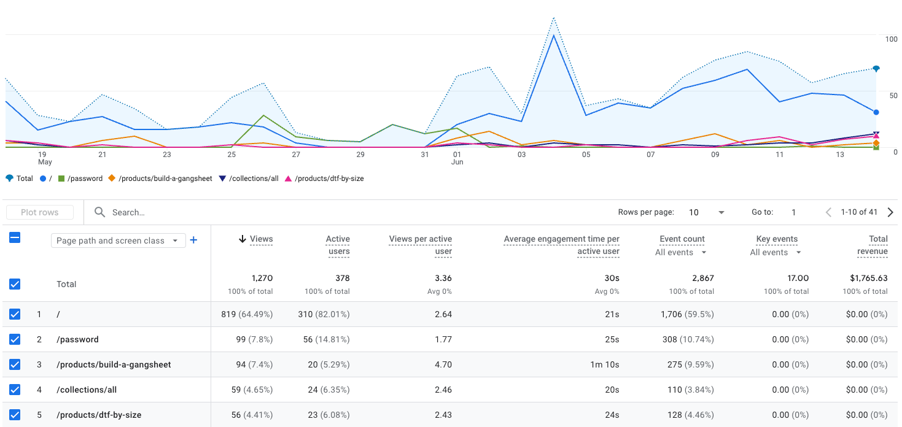
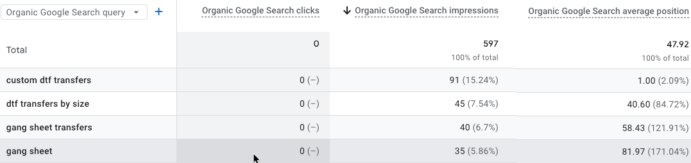

Punch plus vendor/client accounts are being tracked together.
Living marketing update
Punch Creatives
A current operating view of Punch’s own marketing work plus the active vendor and client accounts managed inside the Punch network.
Paid traffic is more efficient than the prior view.
Visible for “custom dtf transfers,” but clicks are not following yet.
Authorized Punch accounts can generate client reports.
Executive summary
Where the Punch network stands right now
Punch Creatives is the primary client, but the active work spans several related accounts. This update is organized to separate Punch’s own systems and reporting work from the individual vendor/client accounts that need performance monitoring, launch support, access cleanup, or client decisions.
The current pattern is clear: some accounts are moving forward through stronger traffic or better reporting visibility, while others are waiting on payment access, platform verification, creative adjustments, or operational decisions such as DTF tube shipping logic.
Punch Creatives
Primary account
Owner: Punch + Stott
Punch reporting workflow is ready for internal testing
Punch now has a no-cost reporting workflow that lets authorized team members build and send client performance reports without purchasing a third-party reporting platform. The tool is connected to Google Analytics, uses Google-authorized login, and publishes web reports through WordPress.

Chem Nut Supply
In progress
Owner: Stott Marketing
Store activity continues to improve
Chem Nut Supply continues to show improved store performance. Recent activity is tracking near $1,000 per month, with approximately $7,000 generated year to date. A billing-error amount has been submitted for review and invoice creation; Tyler is expecting the invoice and will pay upon receipt.
Dr. Kathy McKenzie
Needs action
Owner: Google support + client follow-up
Launch is ready after Google payment verification clears
The Google payment-method verification remains delayed. The card verification returned a five-digit code while Google requires six digits. Google support has been contacted and is researching the invalid-data issue.
LC Mechanical
Needs action
Owner: Client availability
Jotform access needs to be revisited
Aaron indicated that he either does not have access to, or does not remember how to access, the Jotform. During follow-up, he said not to worry about it while he was traveling.
Grub Tub
Needs action
Owner: Client payment setup
Campaign is ready once payment implementation is complete
Google Analytics and Facebook Marketing integrations are configured. Joe is expected to add the credit card, and the account can launch using Jose’s video once payment implementation is complete.
Punch Transfers
Insight
Owner: Stott Marketing + Punch
Ranking well is not the same as converting well
Punch Transfers is showing a strong organic ranking signal for the term custom dtf transfers. The screenshot shows the site appearing in the top position with roughly 90 impressions, which is encouraging because the search term is commercially relevant.
The issue is that visibility is not yet translating into clicks or conversion activity. The next move is to improve the search-result message, page fit, and conversion path so the ranking has a better chance of producing business.

Punch Transfers
In progress
Owner: Stott Marketing
Paid traffic is getting more efficient
The increased spend is producing stronger traffic efficiency. CPC is currently $0.59 compared with $1.30 in the prior view, and click volume is approaching the previous total with less spend. Conversion interpretation should account for the period when the store was closed.
- Prior spend
- $287
- Prior clicks
- 221
- Current spend
- $116
- Current clicks
- 196
Punch Transfers
Decision needed
Owner: Client decision needed
DTF tube shipping logic still needs a decision
Punch Transfers is still working through the best way to charge customers for shipping the DTF tubes used for packaging. The decision is whether shipping should be calculated by package weight, order cost, or a direct carrier integration that returns the shipping price at checkout.
Phil Medeiros
In progress
Owner: Stott Marketing
SEO indexing work is continuing
Ongoing SEO indexing work is progressing. Twenty-one pages have been successfully submitted, with additional indexing constrained by a quota of 10 submissions per day.
Decision list
Needs attention
DTF tube shipping logic
Decide whether DTF tube shipping should be based on package weight, order cost, or a live carrier integration.
Google payment verification
Dr. Kathy McKenzie launch is waiting on Google’s payment-method verification issue.
Grub Tub payment setup
Campaign launch can proceed once Joe adds the credit card.
Organic result improvement
Improve the search-result message for “custom dtf transfers” so the ranking has a better chance of producing clicks.
Access and reporting notes
Accounts to confirm before automation expands
Archive
Previous versions
Each release should be saved as a new version instead of overwritten. The client sees the current view, while Stott keeps the full historical record for Punch and the related network accounts.